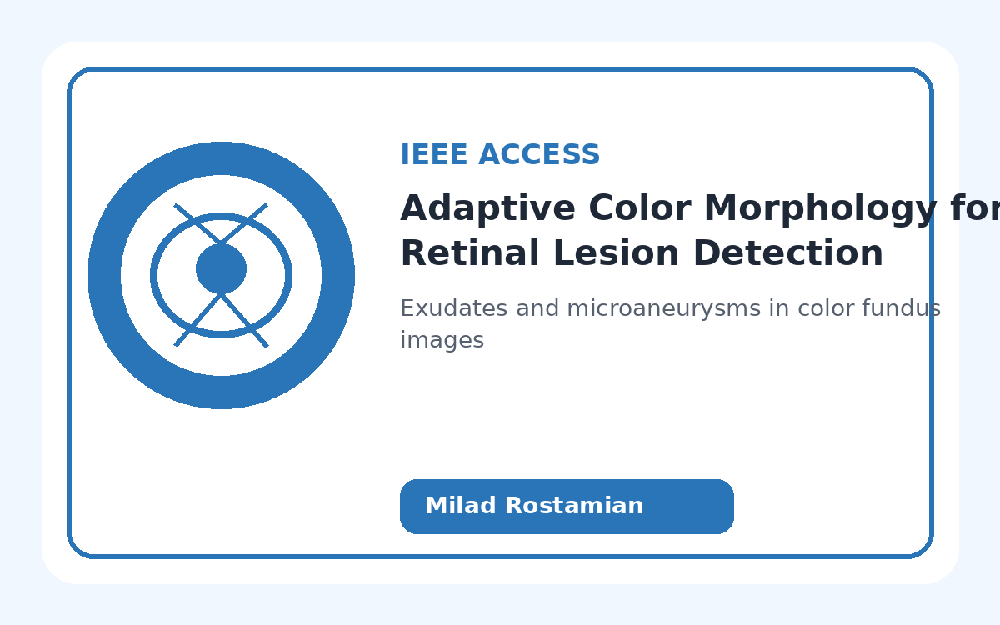
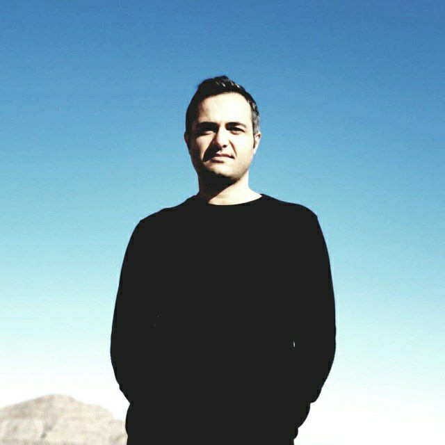
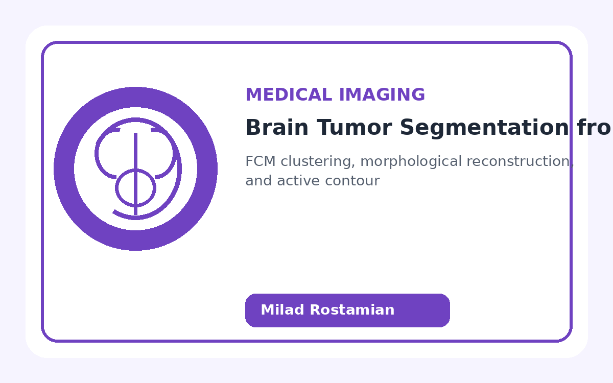
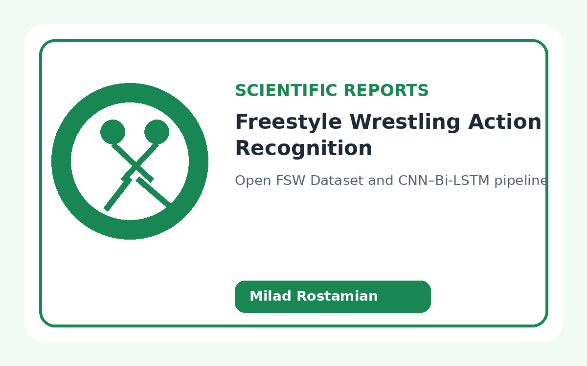
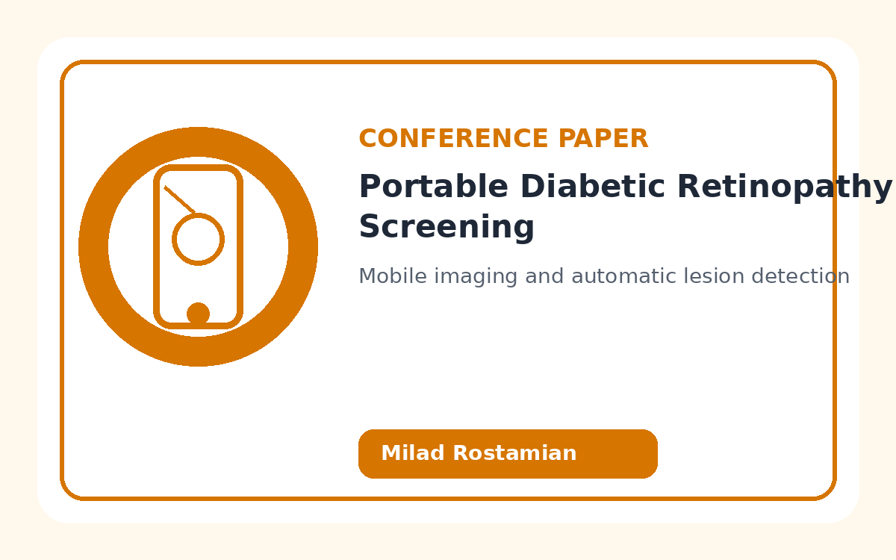
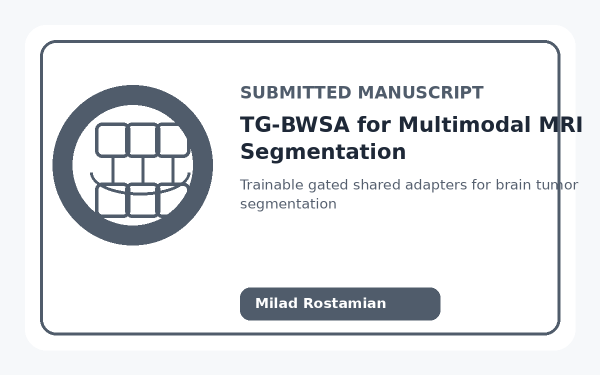

Designing an Adaptive Color Morphology Operator for Exudates and Microaneurysms Detection in Color Fundus Images
M. Rostamian and M. Shekari
Published in IEEE Access, 2026.
Paper
I'm a
I am a Ph.D. Candidate in Artificial Intelligence at the Iran University of Science and Technology (IUST). My research focuses on medical image analysis, computer vision, multimodal learning, self-supervised learning, and efficient deep learning methods for robust visual understanding.
My Ph.D. research investigates brain tumor image segmentation using combined CNN–Transformer architectures, self-supervised learning, and robust deep learning strategies for multimodal MRI analysis.
I am interested in developing reliable and reproducible AI systems for medical image analysis, visual recognition, and document intelligence. My recent work also includes LLM-based systems, parameter-efficient fine-tuning, and applied AI solutions for real-world decision-support tasks.
Technical skills across artificial intelligence, medical image analysis, computer vision, large language models, and reproducible research.
A concise overview of my academic background, research experience, industry work, teaching activities, and selected honors.
Ph.D. Candidate in Artificial Intelligence with research experience in medical image analysis, brain tumor segmentation, computer vision, multimodal learning, self-supervised learning, and applied AI/LLM systems.
Iran University of Science and Technology (IUST), Tehran, Iran
Islamic Azad University, Mashhad Branch, Mashhad, Iran
Quchan University of Advanced Technologies Engineering, Quchan, Iran
Faranegar Co., Tehran, Iran
Computer Vision Lab, ETH Zürich, Switzerland
Iran Telecommunication Research Center (ITRC), Tehran, Iran
Mashhad Islamic Azad University & IUST, Iran
Iran University of Science and Technology (IUST), Tehran, Iran
Professional Service
A selection of my journal papers, conference papers, and submitted manuscripts.

M. Rostamian and M. Shekari
Published in IEEE Access, 2026.
Paper
M. Shekari and M. Rostamian
Published in Multimedia Tools and Applications, 2024.
Paper

M. Rostamian, H. Pourreza, and M. Hosseini
Presented at the 6th Annual Conference of Ophthalmology and Vision Sciences Research, Tehran.

M. Rostamian, M. Mohammadi, E. Konukoglu, and M. Soryani
Submitted manuscript.
GitHubSelected academic and applied projects in medical imaging, computer vision, and mobile AI systems.
A mobile-oriented retinal image analysis pipeline for practical screening and lesion detection.
A real-time mobile vision application for eye-status monitoring and fatigue warning alerts.
A real-time license plate recognition system with image preprocessing, plate detection, and character recognition.
Please feel free to reach out for research collaboration, academic discussion, or applied AI projects.
Tehran, Iran
milad.chessmaster@gmail.com
milad.rostamian@comp.iust.ac.ir
Medical image analysis, brain tumor segmentation, computer vision, multimodal learning, self-supervised learning, efficient model adaptation, and LLM-based document intelligence.
For academic collaboration or project-related inquiries, email is the preferred contact method.